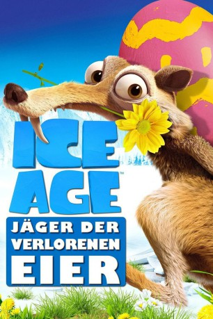

gesehen am 26.03.2016
gesehen am 26.03.2016Alternativ: Ice Age: The Great Egg-Scapade gesehen am 26.03.2016
 
 IMDB-Wertung: 5.9 / 10
IMDB-Wertung: 5.9 / 10  Metascore:
Metascore: 
In der Eiszeit hält der Frühling Einzug: Blumen erblühen, die Tiere erwachen aus ihrem Winterschlaf und die Familien freuen sich auf den Nachwuchs. Da überkommt Sid die verrückte Idee, einen Eier-Sitting-Service für die werdenden Eltern ins Leben zu rufen. Sein Plan droht jedoch zu scheitern, denn Squint, das Piraten-Kaninchen, entführt die Eier, um mit dem Lösegeld ein neues Piratenschiff anzuschaffen.
WEBHDRIP
Jahr: 2016
Dauer: 74 Minuten
FSK:
Land: USA Studio: Fox NetworkTonspuren: DD5.1 - ,
Untertitel: Deutsch,
Auflösung: 1080p (1916x1076) Größe: 2969 MB
Genre: Komödie, Abenteuer, Animation/Trick, Familie
Regisseur: Paul Stodolny, Ricardo Curtis, Steve Martino, Mike Thurmeier
Drehbuch: Jim Hecht
Soundtrack: Mark Mothersbaugh
Darsteller:
 Blake Anderson als Clint
Blake Anderson als Clint David Cowgill als Announcer
David Cowgill als Announcer Seth Green als Squint
Seth Green als Squint Taraji P. Henson als Ethel
Taraji P. Henson als Ethel Gabriel Iglesias als Cholly Bear
Gabriel Iglesias als Cholly Bear Denis Leary als Diego
Denis Leary als Diego John Leguizamo als Sid
John Leguizamo als Sid Josh Peck als Eddie
Josh Peck als Eddie Queen Latifah als Ellie
Queen Latifah als Ellie Ray Romano als Manny
Ray Romano als Manny Seann William Scott als Crash
Seann William Scott als Crash Chris Wedge als Scrat
Chris Wedge als ScratDatei: X:\Kinder Collections\Ice Age\Ice Age - Jäger der verlorenen Eier (2016, FSK, 1916x1076).mkv seit 23.03.2016
Festplatte: Kinder-Filme+Trick
 Es gibt insgesamt 12 Filme in der Gruppe 'Kinder Collections\Ice Age'
Es gibt insgesamt 12 Filme in der Gruppe 'Kinder Collections\Ice Age'